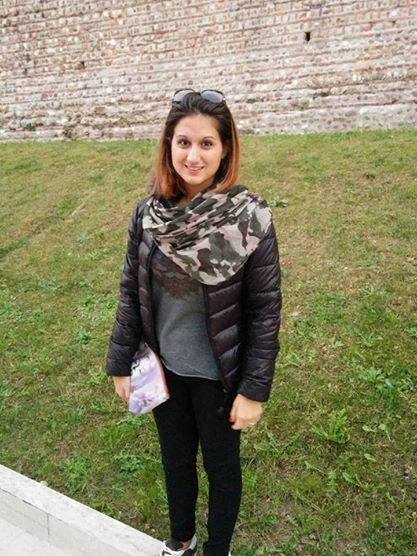

Racconti
Simonetta Balsamo
Laureata in Scienze dell’Informazione all’Università di Pisa nel 1981, in uno dei primi corsi di questa laurea in Italia, ho avuto modo di seguire la rapida evoluzione del settore sia dal punto di vista della ricerca e sia della tecnologia, nei decenni successivi.
Ricercatore dal 1984 prima, poi professore associato dal 1988 presso il Dipartimento di Informatica l’Università di Pisa, e quindi professore ordinario presso l’Università di Udine e quindi l’Università Ca’ Foscari di Venezia, ho insegnato ai corsi di Laurea in informatica di diverso livello e ai corsi di Dottorato in Informatica. Ho collaborato con istituti e centri di ricerca, compresi il CNR a Pisa e l’IBM T.J. Watson Research Center di Yorktown Heights in US. Ho avuto modo di sviluppare il lavoro di ricerca nel settore dei sistemi informatici e di modelli quantitativi per la loro analisi e valutazione con molte diverse collaborazioni con Università e Istituti di Ricerca in Italia e all’estero.
Alle giovani che volessero intraprendere la carriera in Informatica consiglio di seguire i propri interessi, intraprendere gli studi con attenzione e impegno per costruirsi solide basi metodologiche dei fondamenti e dare poi spazio all’approfondimento di argomenti e temi avanzati e innovativi.
Mantenere attenzione e profondità nello studio, flessibilità e capacità di visione critica e al contempo dare spazio alla creatività e iniziativa che questo settore delle scienze più di altri permette. Sia che lo studio sia rivolto alla preparazione di una carriera di ricerca, sia che sia diretto al mercato del lavoro, è un’occasione unica e importante di crescita e formazione personale.
Nicoletta Cocco
Ho studiato Matematica a Padova, ma con un grande interesse per l’Intelligenza artificiale.
Dopo la laurea in Matematica nel 1979 con una tesi in Informatica, ho scelto il percorso universitario: borsista e poi ricercatore all’Università di Padova, quindi professore all’Università Ca’ Foscari di Venezia.
Tra i miei interessi di ricerca vorrei citare i linguaggi di programmazione, le tecniche di verifica di correttezza dei programmi, la programmazione logica e più’ recentemente la bioinformatica.
Cio’ che continua ad affascinarmi nell’Informatica, ed è il motivo per cui mi sento di consigliarlo ad altri ed in particolare a ragazze curiose ed amanti del ragionamento, e’ che si fonda sull’analisi, l’astrazione e la formalizzazione del pensiero e dei processi e che ha possibilità’ di applicazione ai campi più’ vari, come ad esempio alla biologia.
Alessandra Raffaetà
Mi chiamo Alessandra Raffaetà e sono ricercatrice presso il Dipartimento di Scienze Ambientali, Informatica e Statistica dell'Università Ca' Foscari di Venezia. Fin da piccola ero appassionata di matematica e quando in terza liceo linguistico ho avuto la possibilità di seguire un percorso sperimentale che prevedeva lo studio dell'informatica non mi sono lasciata sfuggire questa occasione. Sono rimasta affascinata dal concetto di algoritmo, dalla possibilità di formalizzare e riprodurre i passi secondo i quali procede il ragionamento dell'essere umano. Questa fascinazione è rimasta al centro dei miei interessi. Così nel 1989 mi sono iscritta al Corso di Laurea in Scienze dell'Informazione presso l'Università di Pisa, dove mi sono laureata nel 1994. Quindi ho frequentato il dottorato di ricerca presso l'Università di Pisa e, una volta conseguito il titolo, ho ricevuto un assegno di ricerca per continuare, sempre a Pisa, la mia attività di ricerca nell'ambito della programmazione logica. Nel 2001 sono risultata vincitrice di un concorso per ricercatore universitario nel settore informatico presso l'Università Ca' Foscari di Venezia.
I miei interessi di ricerca si sono spostati dalla programmazione logica all'area delle basi di dati, con un filo conduttore che è la rappresentazione e il ragionamento su grandi moli di dati di tipo spazio-temporali.
Non ho mai incontrato difficoltà nell'affrontare materie scientifiche/tecnologiche e ho condiviso il mio percorso universitario e di ricerca con varie colleghe donne. Così consiglio vivamente alle ragazze di intraprendere un percorso universitario nell'ambito dell'informatica. Si tratta infatti di una disciplina che offre molte competenze differenti, spesso lontane dallo stereotipo legato all'uso routinario e scarsamente creativo di un calcolatore: dagli aspetti più teorici e filosofici, focalizzati sui limiti della potenza di calcolo di un calcolatore, si passa agli aspetti di programmazione, che stimolano inventiva e creatività, quindi agli aspetti di analisi e supporto alle decisioni, che permettono di indagare e prevedere comportamenti e tendenze, e agli aspetti sistemistici, per chi sia appassionato delle tecniche di supporto alla realizzazione e gestione dell'infrastruttura software di sistemi complessi.
Sabina Rossi
Mi chiamo Sabina Rossi e sono professore associato di Informatica presso L'Universita' Ca' Foscari di Venezia. Ho concluso il liceo classico nel 1984 e poi mi sono iscritta al corso di laurea in Matematica presso l'Universita' di Padova. Sono sempre stata attratta dalle materie scientifiche pur avendo apprezzato la formazione umanistica della scuola secondaria. Durante l'Universita' ho seguito dei corsi di matematica applicata e informatica e dopo la laurea mi sono iscritta al dottorato di ricerca in Matematica Computazione e Informatica Matematica. Nel 2000 sono risultata vincitrice di un concorso per ricercatore universitario nel settore Informatica presso l'Universita' Ca' Foscari di Venezia. Mi sono trovata spesso in ambienti, quali conferenze, corsi di dottorato, seminari, prevalentemente frequentati da uomini, per il carattere scientifico/tecnologio dell'area di studio e di ricerca. Tuttavia non mi sono mai sentita discriminata. Ho collaborato con diversi colleghi uomini sia nell'ambito della didattica che in quello della ricerca e ho sempre avuto buoni rapporti, non ho mai percepito alcuna differenza soprattutto sul piano intellettuale.
Il consiglio che mi sento di dare alle ragazze che intendono intraprendere un percorso didattico e lavorativo di tipo scientifico/tecnologico e' di non lasciarsi influenzare dai pregiudizi. L'informatica e' una disciplina affascinante che puo' essere molto creativa. Credo che le donne possano contribuire allo sviluppo delle tecnologie tanto quanto gli uomini, la diversa sensibilita' e il modo diverso di affrontare i problemi potra' sicuramente portare alla creazione di nuove applicazioni di utilita' nei diversi campi della vita sociale.
Jessica Azzolin
Mi chiamo Jessica, ho 21 anni e attualmente frequento il secondo anno di Informatica all'Università Ca' Foscari di Venezia.
Ho iniziato a conoscere certi aspetti dell'informatica come la programmazione e la creazione di siti web, durante le scuole superiori. Questo mi ha incuriosito sempre più fino ad arrivare alla decisione di intraprendere un percorso universitario per ampliare le mie conoscenze.
Ciò che mi appassiona di più dell'informatica è la possibilità di esprimere l'intero mondo reale attraverso un lunghissimo flusso di soli zero e uno, la possibilità di cercare soluzioni, progettare e infine risolvere i problemi delle persone nel miglior modo possibile e con strumenti sempre più innovativi.
Alcune persone scelgono il proprio percorso di studi in base alle amicizie o alle conoscenze che hanno all'interno di altre università. Il mio consiglio è di scegliere cosa studiare in base alle proprie ambizioni o comunque cercare di apprendere ciò che ci piace perchè ci riesce meglio.
Inoltre non ritengo ci siano distinzioni tra uomini e donne in questo ambito perchè la materia in questione è affrontabile da chiunque anche se, come qualunque altra materia richiede molto impegno. Concludendo il mio consiglio è di non soffermarsi o farsi influenzare da banali stereotipi ma di credere in se stessi e nei propri sogni.
Mariagiovanna Czarnecki
Sono Mariagiovanna, ho 20 anni e frequento il primo anno di informatica presso l’Università Ca’ Foscari. Provengo da un liceo classico e fino a pochi mesi fa non avevo idea di cosa fosse la programmazione. Poco a poco sono stata colta dall’interesse verso tale disciplina e ho cominciato a creare i miei primi programmi in Python e in Java. Ho deciso, poi, di addentrarmi ulteriormente in questo percorso, intraprendendo la carriera universitaria in questione. Prima che mi iscrivessi, qualcuno ha provato a dissuadermi affermando che lo studio dell’informatica mi avrebbe trasformato in un robot. Sinceramente non mi pare che ciò stia accadendo: ritengo, anzi, che la programmazione, da un lato, stimoli molto la fantasia e che, dall’altro, aiuti a sviluppare un pensiero matematico grazie a cui risolvere molti problemi della vita quotidiana. Pur essendo solo all’inizio, sono soddisfatta della mia scelta.
Il fatto che poche donne affrontino questo percorso può essere dovuto alla visione comune secondo cui si tratta di un settore prettamente maschile, il che non è vero. Sarebbe necessario rafforzare, come di fatto già avviene in alcuni Paesi, il pensiero computazionale a partire dalle elementari, rendendolo accessibile fin dall’inizio a tutti. In questo modo, si riuscirebbe a ridurre una certa ignoranza di fondo, che spesso è la maggiore fonte di pregiudizi.
Martina de Zan

Ciao! Sono Martina, ho 20 anni, abito a Belluno e frequento il corso di laurea triennale di informatica a Ca' Foscari, Venezia.
Quando ho scelto questo percorso di studi non sapevo bene in cosa consistesse: avendo frequentato un liceo linguistico, la mia conoscneza della tecnologia era relegata al solo interesse personale e quindi molto ristretta, ma i computer mi affascinavano moltissimo, per cui mi sono detta "perché no?"
Proseguendo nei miei studi, non ho mai avuto modo di pentirmi della mia scelta, questo perché più cose imparavo, più ne volevo conoscere e più ne conoscevo, più cambiava il mio modo di pensare. Studiare informatica è molto più che imparare linguaggi di programmazione. Studiare informatica significa capire davvero come sono i computer e imparare a conoscerli, rendendosi conto che le loro possibilità sono pressoché infinite. Per questo consiglio il corso di studi di informatica a tutte le ragazze che hanno voglia di studiare e di mettersi in gioco, olte che una grande fantasia...e anche molta pazienza (questa è caldamente consigliata per lo studio della matematica!)
Susanna Lorenzini
Personalmente ho scelto informatica perché mi sembrava la cosa migliore per me e più interessante. Sono uscita da uno scientifico quindi, se da una parte non posso dire di avere esperienza con l'informatica, dall'altra non volevo lasciare uno studio di tipo matematico. Adesso, passati alcuni mesi, posso dirmi soddisfatta della mia scelta sia come indirizzo di studi che come università poiché ho trovato persone (studenti, tutor e professori) assolutamente disponibili ad aiutare. Penso che le ragazze dovrebbero scegliere informatica perché è tanto complessa quanto affascinante, é sempre stimolante riuscire a scrivere un codice e cercare il miglior modo per risolvere un problema. In più può essere applicata a molteplici ambiti quindi potremmo dirla versatile.
Gaia Orsini
Ciao! Mi chiamo Gaia, ho 23 anni e frequento il primo anno della specialistica in Computer Science presso l'Università Ca' Foscari di Venezia.
Ho scelto di studiare informatica perchè fin da bambina sono stata a stretto contatto con la tecnologia e questa è sempre stata parte integrante della mia vita: niente di più normale, quindi, che io abbia preso questa decisione. Come scuola superiore ho frequentato il Liceo Classico, una scuola di tutt'altro tipo. Tuttavia, nonostante l'indirizzo completamente diverso dei miei studi, non è stato per me un problema più che per tutti gli altri studenti terminare la triennale in informatica.
L'informatica, come tutte le discipline, non è una cosa per maschi o per femmine: lo consiglierei a chiunque abbia un'intelligenza di tipo logico, buone capacità matematiche e infine spiccati curiosità e interesse per la tecnologia che accompagna la nostra esperienza quotidiana. La maggior parte degli studenti e dei professionisti in questo campo sono uomini, e proprio per questo l'informatica ha bisogno di ragazze.
Ylenia Parin
Mi chiamo Ylenia, ho 20 anni e frequento il secondo anno di Informatica presso l’Università Ca’ Foscari di Venezia.
Ho scelto di frequentare il corso di Informatica perché risolvere i problemi che mi vengono posti è sempre molto stimolante per me: mi da’ sempre molta soddisfazione riuscire a trovare la soluzione di un problema complesso, che si tratti di matematica o di programmazione.
Questa mia attitudine l’ho riscontrata fin dalle superiori: ho infatti frequentato un Istituto Tecnico Commerciale, precisamente l’indirizzo programmatori. Nei primi anni delle superiori non avevo ben chiaro quale dei due studi volessi approfondire all’Università, ma con il tempo ho riscontrato che l’informatica era ciò che faceva per me e se dovessi tornare indietro farei ancora le stesse scelte.
Credo però che non avrei mai preso questa decisione se non avessi avuto una buona e solida preparazione da parte dei miei docenti e ritengo che sia proprio la qualità della propria istruzione a fare la differenza: non c’entra l’essere uomo o donna nel mondo dell'informatica, sono le proprie capacità, l’impegno nello studio e la passione che permettono di scrivere un programma corretto e efficiente.
Mara Pistellato
Ciao! Mi chiamo Mara, ho 23 anni ed attualmente frequento il primo anno del corso di laurea magistrale in Informatica presso l’Università Ca’Foscari di Venezia.
Sin da piccola ho sempre avuto curiosità verso le materie scientifiche e le tecnologie: inutile dire che quando mi regalarono il mio primo computer sono impazzita! Negli anni questa curiosità è diventata un desiderio di imparare sempre di più, fino a volerne fare il mio lavoro futuro; così dopo le superiori ho scelto di iscrivermi al corso di laurea in Informatica, che sto tuttora approfondendo con il corso specialistico. Sono molto contenta del mio percorso: ho scelto di fare una delle cose che mi appassionano di più ed ho avuto inoltre molte soddisfazioni.
Purtroppo tutt’ora l’informatica sembra ancora una materia riservata al sesso maschile, forse perché alcune ragazze pensano già in partenza di non essere capaci. Penso invece che se una ragazza fosse interessata ad entrare in questo settore, dovrebbe semplicemente informarsi ed iscriversi al corso o scuola che più le piace: se dovessi darle un consiglio direi semplicemente di non dividere le materie in “cose da maschi” e “cose da femmine”, ma di pensare invece a quello che più la appassiona e di seguire quella strada.
Margherita Rossi

Ciao sono Margherita, ho 22 anni e abito a Venezia.
Studio informatica, frequento la triennale. Ho scelto di seguire questa strada per interrompere la catena di umanisti che lega tutta la mia famiglia. Perché ho scelto proprio informatica? È una materia affascinante, ti fa capire quanto lavoro c’è dietro le azioni che noi riteniamo semplici quando ci mettiamo al computer: presenta delle difficoltà, ma dà tante soddisfazioni; non c’è nulla di meglio di vedere le proprie idee realizzate e funzionanti.
Ho trovato degli ostacoli, certo, ma al momento sono contenta della mia scelta e la consiglierei a tutte le ragazze curiose e che hanno voglia di mettersi in gioco: l’informatica richiede praticità, forza di volontà, elasticità e grinta, tutte doti che caratterizzano il genere femminile nella sua totalità.
Rossana Salaro
Mi chiamo Rossana, ho 20 anni e attualmente frequento il secondo anno di Informatica presso l'università Ca' Foscari di Venezia.
Ho scelto informatica principalmente per specializzarmi nella parte web e di gestione dei dati e per continuare il percorso che avevo iniziato alle superiori; infatti provengo da un istituto tecnico dove mi sono diplomata in Informatica. Fin dalle scuole medie sono sempre stata convinta che l'informatica fosse ciò che avrei voluto fare da "grande" e infatti non mi sono smentita. Con il passaggio alle superiori ho imparato a conoscere molti degli aspetti dell'informatica che tuttora sto approfondendo grazie al percorso universitario.
Per quanto riguarda la distinzione tra i sessi nel campo dell'informatica non penso che al giorno d'oggi si possa pensare ancora a una differenza tra uomini e donne. Credo infatti che le donne interessate ad avvicinarsi all'informatica stiano crescendo sempre di più, soprattutto per il fatto che oramai l'informatica e la tecnologia in generale ci circondano in tutti gli aspetti della nostra vita quotidiana. In conclusione l'informatica non si addice in particolare a nessuno dei due generi ed è indifferente se a scrivre un programma è una donna piuttosto che un uomo, in fondo il risultato finale sarà comunque buono o cattivo in base alla preparazione e all'esperienza del soggetto.
Damiana Salvalai
Sono Damiana, ho 22 anni, sono di Brescia e sono al terzo anno del corso di laurea triennale di informatica a Ca' Foscari.
Finite le superiori ero indecisa su quale percorso di studi scegliere. Avendo fatto il liceo artistico le mie basi di matematica non era di certo le migliori per scegliere questo percorso, inoltre non avevo fatto niente di programmazione durante l'arco delle superiori e non mi sentivo sicura nell'intraprendere questo percorso. Nonostante questo mi sono buttata, scegliendo informatica.
Durante i miei studi, non mi sono mai pentita della mia scelta. Consiglio a tutte le donne che vogliono iniziare questo percorso di buttarsi, con l'impegno si può raggiungere qualsiasi traguardo.
Debora Scappin
Mi chiamo Debora, ho 22 anni ed attualmente sto finendo la triennale di Informatica presso l’università Ca’ Foscari di Venezia.
La scelta di questo indirizzo è ovviamente dovuta ai miei interessi e in parte anche al mio percorso di studi. Alle superiori infatti ho frequentato un istituto tecnico per ragionieri-programmatori, quindi una piccola conoscenza del mondo informatico già l’avevo nel momento in cui mi sono iscritta all’università. Sinceramente il mio interesse per l’informatica è maturato negli anni, in particolar modo durante la scuola superiore, non posso infatti dire che fosse il mio sogno da bambina. Ad oggi comunque mi ritengo soddisfatta della mia scelta e miro a specializzarmi nell’ambito del social marketing per chiudere il cerchio del mio percorso.
In questi ultimi anni molte persone mi hanno chiesto il motivo per il quale mi sono iscritta ad informatica, poiché tutti la ritenevano una facoltà per uomini. Quando davo le mie motivazioni o semplicemente affermavo che la materia mi interessava restavano basiti. Ora mi chiedo se oggi si possa ancora pensare ad una distinzione tra uomini e donne: esistono uomini che fanno lavori considerati “da donne” e donne che fanno lavori considerati “da uomini”, dove sta il problema? È solamente una questione di interessi. La tecnologia ormai è diventata parte della vita di ognuno di noi, degli uomini e delle donne, e questo vortice, se così lo vogliamo chiamare, ci travolgerà sempre di più, senza fare distinzioni di sesso.
Kotono Yoshida
Mi chiamo Kotono, sono una ragazza giapponese di 19 anni e attualmente frequento il primo anno di informatica.
Ho scelto informatica principalmente per le sue grandi prospettive di lavoro in tutto il mondo. Infatti dato che non so ancora se rimanere qui oppure tornare in Giappone, oppure andare altrove, volevo imparare una cosa che mi fosse utile universalmente in qualsiasi parte del mondo. Provengo da un liceo e non ho nessuna conoscenza a priori riguardo la programmazione e altro, ma frequentando questo percorso universitario sto scoprendo i vari campi dell'informatica che mi affascinano.
Sono dell'idea che questa è anche una delle strade più efficienti per emanciparsi; possedere uno strumento per poter risolevere questioni legati alla tecnologia, informatica che aumenteranno sempre di più, senza essere dipendenti dagli altri è un vantaggio, sia per le donne che per gli uomini. Vista la grande differenza del numero di iscritti tra i sessi, sembra forse sia più per gli uomini ma a mio avviso è indifferente ed è una scelta profiqua per entrambi i sessi.
Silvia Crafa
Sono Silvia Crafa, dal 2005 ricercatrice di informatica presso l’Universita’ di Padova. Io mi sono laureata in matematica, scegliendo un percorso di esami orientato alla logica matematica che includeva anche esami di informatica. Non sono mai stata esperta ne’ appassionata di aspetti tecnologici, ma ho scoperto che c’e’ un piano piu astratto al di sopra della tecnologia e anche del software: e’ un piano in cui si costruiscono rigorosi modelli matematici dei sistemi software e dei linguaggi di programmazione, e su questi modelli si applica il ragionamento logico dimostrando teoremi e proprietà interessanti.
Questo e’ diventato quindi il mondo in cui lavoro, mettendo insieme le attività’ di ricerca e di didattica, cercando in entrambi i casi di essere sempre attenta e aggiornata sugli sviluppi del mondo informatico. Anche se nel mio lavoro la maggior parte dei colleghi sono uomini, non ho mai avvertito pregiudizi nei confronti delle donne. Credo inoltre che le abilita’ femminili nella gestione dei rapporti umani siano molto utili in nel mio lavoro: la capacita’ di creare collaborazioni, di smussare i contrasti, di tenere insieme visioni diverse, di avere pazienza, a volte si dimostrano fondamentali.
L’informatica non e’ certo “cosa da uomini”: e’ uno strumento che ognuno può usare secondo la propria sensibilità, proprio come ogni pittore decide il suo modo di usare un pennello. Io non so disegnare, ma vedo che immaginare nuovi pennelli mi riesce bene e mi diverte.
Giulia Brusaferro
Mi chiamo Giulia e ho 25 anni. Ho completato la Laurea Triennale in Informatica presso l'Università di Ferrara e ora sono iscritta al secondo anno della Laurea Magistrale all'Università di Padova.
Ho frequentato il Liceo Scientifico dove ho imparato a pensare in modo matematico, ma dove purtroppo l'informatica non si studiava ancora. Ho scoperto questo corso di laurea attraverso il mio ragazzo, lui era al primo anno e ogni tanto studiavamo insieme e i suoi esami mi affascinavano, ogni volta mi facevo spiegare qualcosa di nuovo. Mi sono detta 'è una cosa diversa, è stimolante, è una sfida, è il futuro, perché non provare?'.
Non nego che molte volte mi sono chiesta se fosse la strada giusta, spesso l'amore per l'informatica viene fatto passare come un "modo di essere", io sono fermamente convinta invece che sia un "modo di pensare", è stimolare la propria mente a trovare soluzioni, a superare limiti, a ragionare sulle cose. E da quando queste sono prerogative esclusivamente maschili?
Cristina Cornelio
Sono Cristina Cornelio, ho 26 anni e sono dottoranda al terzo anno presso la Scuola di Dottorato in Scienze Matematiche, area Informatica, dell'Università degli studi di Padova.
Da sempre attratta dalle materie scientifiche e appassionata di tecnologia, ho conseguito la maturità scientifica nel 2007 e nel 2010 mi sono laureata in Matematica presso l’Università degli Studi di Udine. Nel 2012 ho ottenuto la Laurea Magistrale in Matematica presso l’Università degli Studi di Padova. Lo svolgimento della tesi magistrale mi ha permesso di approfondire argomenti riguardanti l’intelligenza artificiale che mi ha da subito fortemente affascinata e stimolata. Ho deciso quindi, spronata dai docenti, di continuare il mio percorso in ambito accademico iscrivendomi alla scuola di dottorato in cui mi sono specializzata in analisi di preferenze, studio e aggregazione delle preferenze di agenti, ragionamento con incertezza, CP-nets, tanto che nel 2013 ho ricevuto la “Menzione speciale Premio per NeoLaureati 2013” conferito dall’Associazione Italiana per l'Intelligenza Artificiale.
Per il carattere della mia area di ricerca, mi sono trovata spesso in ambienti cosiddetti “maschili”, tuttavia non ho mai colto differenze di trattamento basate sul sesso: ho sempre avuto buoni rapporti sia con i colleghi che con i superiori maschi e non ho mai percepito discriminazioni o pregiudizi da parte di nessuno di loro.
Mi sento quindi di consigliare alle ragazze che dimostrano predisposizione e interesse verso settore scientifico/tecnologico di intraprendere un percorso formativo e lavorativo in questo ambito senza lasciarsi influenzare dai luoghi comuni. Suggerisco quindi di viverla come una sfida, così da essere spronate, oltre che dal fascino degli argomenti, anche dalla volontà di dimostrare che non esistono settori prettamente “maschili” o prettamente “femminili”, ma solamente capacità e attitudini diverse nelle singole persone.
Serena Ghiraldi
Ciao! Mi chiamo Serena, ho 22 anni e sono laureata alla triennale di informatica presso l'Università degli Studi di Padova.
Voler studiare informatica è stata per me una scelta naturale: è ciò che mi è sempre piaciuto e che mi incuriosiva imparare.
Come scuola superiore ho scelto un ITIS informatico per poi confermare la scelta iscrivendomi al corso di laurea in Informatica.
In tutto il mio percorso non ho mai sentito il peso del "è una cosa da maschi", perchè questa disciplina, come qualsiasi altra, che si decide di studiare, va scelta unicamente perchè è ciò che si vuole fare, motivati dal fatto che piace ed appassiona, indipendentemente dagli stereotipi, ma solo in ragione di se stessi.
Perciò ragazze, lasciate fuori qualsiasi preconcetto e chiedetevi solo se è ciò che vi interessa davvero!
Maria Paola Bonacina

Sono Maria Paola Bonacina, Professoressa Ordinaria di Informatica all'Università degli Studi di Verona. Grazie di questa opportunità di condividere il mio entusiasmo per quella scienza splendida che è l'informatica!
Frequentai il Liceo Scientifico "Filippo Lussana" di Bergamo, una scuola bellissima. Verso la fine del liceo ero incerta se studiare fisica o informatica all'università; scelsi informatica, attratta dall'idea dell'intelligenza fuori dell'umano. Dopo la laurea all'Università degli Studi di Milano entrai nel dottorato di ricerca a Milano per perseguire ricerche in dimostrazione automatica di teoremi. Durante il dottorato mi trasferii alla State University of New York at Stony Brook, una sede eccellente per la ricerca in ragionamento automatico, che è da allora la mia area di ricerca. Completati sia il dottorato a Milano che il PhD a Stony Brook, dopo due postdoc all'Argonne National Laboratory e all'INRIA, iniziai la carriera accademica alla University of Iowa, e oggi continuo a Verona.
L'informatica mi ha dato e mi dà soddisfazioni immense, insieme alla possibilità di vivere, studiare, lavorare in Paesi diversi (Italia e Stati Uniti, ma anche Francia e Germania), e viaggiare in molti di più. Il piacere più grande è quello che viene dal risolvere problemi informatici, dall'interagire con ragionatori automatici, da questo fenomeno fantastico per cui noi scriviamo un programma, ma non possiamo prevederne tutto il comportamento, per cui ci sorprende con esiti inattesi e intelligenti, prova affascinante di intelligenza artificiale! L'informatica è unica per come unisce matematica e ingegneria, per come porta a ragionare per livelli di astrazione, e a dominare la complessità di sistemi stupefacenti.
Quando mi iscrissi all'università a Milano venendo dal liceo le ragazze erano il 40%. Quando approdai a Stony Brook, scopersi che c'era già molta consapevolezza del problema della scarsa capacità dell'informatica di attrarre ragazze, e così in tutti gli Stati Uniti. Arrivata a Verona mi son trovata davanti a classi dove le ragazze a volte non arrivano al 5%. Le statistiche indicano che l'informatica è forse la disciplina più maschile di tutte. Sull'informatica gravano due pregiudizi di genere: quello contro le donne e il pensiero astratto, teorico, matematico, pregiudizio tradizionalmente più marcato nelle culture dell'Europa e America Settentrionale, e quello contro le donne e l'ingegneria, pregiudizio tradizionalmente più marcato nelle culture dell'Europa e America Meridionale. I pregiudizi e le discriminazioni sono nella società e nella famiglia, dove iniziano a influenzare i comportamenti prestissimo. Ciò non toglie che l'università debba combatterli, perchè l'università non è solo una scuola di sapere scientifico-tecnico, è una scuola di libertà, libertà di pensiero, libertà di essere e mettere a frutto i propri talenti senza pregiudizi e discriminazioni.
A noi ragazze di tutte le età e tutte le estrazioni dico di non avere paura di nulla, essere coraggiose, fidarsi di sè stesse, seguire le proprie inclinazioni, investire sempre e solo su sè stesse, non fare passi indietro, non accontentarsi di essere la numero due di qualcuno, mettere l'asticella della propria ambizione sempre più in alto, imparare anche dalle sconfitte e dagli errori, provare e riprovare sempre: non sapremo mai quel che possiami fare se non proviamo! Mai avere paura di competere: nella competizione impariamo sia le nostre forze che le nostre debolezze, impariamo a rispettare gli altri e noi stesse.
Stiamo anche attente, perchè le discriminazioni, le ingiustizie, le iniquità esistono, e sono sottili, subdole e sotterranee. Nessuno ci avverte dicendoci "Ti sto discriminando" quando lo fa; ce ne accorgiamo solo dopo, spesso troppo tardi. Non bisogna scoraggiarsi mai! Se si è testimoni di comportamenti discriminatori, non bisogna subire. E' importante parlarne con altre persone, altre ragazze, donne più grandi, uomini sensibili, che esistono, persone in posizione di responsabilità che possono fare qualcosa. Quasi sempre scopriremo che non siamo le sole ad aver notato che qualcosa non va, o che altre ci sono passate prima di noi. Non bisogna scoraggiarsi se ci si accorge che gli uomini vengono trattati meglio. Se si vede che per un certo riconoscimento a un uomo basta aver fatto cento quando a noi viene chiesto duecento, non abbattiamoci! Ci sono state donne prima di noi a cui fu chiesto quattrocento, eppure ce la fecero! Quando Marguerite Yourcenar entrò, prima donna, all'Academie Française, disse che sentiva vicino a sè le ombre di tutte le donne che avrebbero meritato di entrarci prima di lei ma non furono ammesse perchè donne. La consapevolezza della storia sia ragione di fierezza, coraggio, libertà.
Noi ragazze siamo generose, ma occorre scegliere i propri obbiettivi e stare concentrate per raggiungerli. Noi ragazze siamo bravissime, ma talvolta veniamo isolate, quando invece in ogni contesto professionale è importante farsi conoscere, farsi apprezzare, fare rete. Entrate quindi in informatica con tutto il vostro slancio e anche la vostra accortezza, e godetevi e costruitevi la vostra storia meravigliosa! Auguri!!!
Sabrina Atzori

Mi chiamo Sabrina, ho 23 anni e frequento attualmente il corso di Laurea Magistrale di Informatica all'Università di Cagliari.
Qualche anno fa non scelsi di frequentare questo corso ragionando effettivamente su cosa mi interessava studiare o fare in un futuro. Fu curiosità e voglia di mettersi alla prova cimentandosi in qualcosa di cui non sapessi praticamente nulla!
La sorpresa è stata duplice: essere riuscita nell’impresa di comprendere una scienza non banale quale l’informatica e aver incrementato l’autostima e l’interesse a tal punto da portarmi ad andare avanti per questa strada.
Non ho mai dubitato delle scelte che ho fatto e che sto facendo; conoscendo molte altre ragazze iscritte al corso, in gamba e intraprendenti, sentendo le loro idee che parzialmente coincidono con le mie, consiglierei a chiunque di affrontare questo percorso. D'altronde non è una laurea per soli uomini, anzi, ritengo che possa appassionare allo stesso modo, se non talvolta anche di più, molte donne.
Debora Ciano
Mi chiamo Debora Ciano...sono di Gaeta, ho 26 anni e attualmente sono iscritta al secondo anno della laurea magistrale in Informatica all’Università degli Studi di Roma “ La Sapienza”.
Perchè ho scelto proprio Informatica? Personalmente ho deciso di intraprendere questa strada durante gli anni delle superiori quando ho avuto il mio primo computer, successivamente nei primi anni universitari mi sono trovata davanti ad un mondo che mi piaceva ma che allo stesso tempo mi ha dato nuove sfide da affrontare come per esempio la programmazione, che fino ad allora non sapevo cosa fosse. Nonostante questo sono sempre stata convinta della mia scelta perchè considero l’informatica la scienza del futuro e infatti tutt’oggi rappresenta uno dei campi più diffusi e presenti nella vita di tutti i giorni.
Non è roba per donne? Assolutamente non è cosi….spesso viene attribuita solo all’universo maschile ma credo proprio che nel ventunesimo secolo questa barriera sia superata e lo dimostra la presenza in forte crescita di donne in quasi tutti i ruoli professionali. Ad ogni modo penso che la passione e la tendenza per un particolare percorso di vita non credo abbia disparità tra i sessi ma che invece vadano coltivate quindi non posso che augurarvi di fare la scelta giusta!!
Laura de Carlo

Mi chiamo Laura, sono Leccese e tra poco compio 26 anni. Dopo aver completato la mia Laurea Triennale in Informatica a Bari, sto terminando i miei studi con la Laurea Magistrale qui a Roma.
Amo la letteratura e l'arte, in generale le scienze umanistiche, pertanto a volte mi chiedo se il cammino che ho scelto sia giusto o meno, se sia quello che fa per me, e, alla fine, mi rispondo di sì! Una donna può avere più passioni ed essere comunque determinata a coltivarne una in particolare. Perché' mi piace l'Informatica? Di sicuro perché è ciò che ci circonda, perché in questo secolo non potremmo farne a meno, perché ci rende la vita più facile e la ottimizza, perché ci aiuta ad aprire la mente ed a pensare in maniera diversa.
Sono qui per testimoniare che la tecnologia non coinvolge sempre e soltanto gli uomini, come i luoghi comuni ci fanno credere, bensì oggi il mondo informatico stimola ed incontra la passione per l'informatica anche in una donna. Informatica non significa soltanto scrivere del "codice", essa è ovunque e significa passione, creatività, intuizione, interazione nel sociale; ma soprattutto ci aiuta ad avere una visione del mondo lungimirante per rivoluzionare il modus pensandi abituale della gente. Cosa vorrei fare da "grande"? Lavorare nel mondo delle reti e della grafica per sfruttare il mio lato creativo ed interattivo. In bocca al lupo ragazze!
Sara de Cristofano

Ciao, sono Sara e sono iscritta al corso di laurea magistrale in Informatica alla Sapienza. Ho scelto informatica perchè è la materia in cui mi sono diplomata, e negli anni è diventata sempre più una passione.
Non ho avuto grosse difficoltà nel corso dei miei studi, nonostante l'ambiente prettamente maschile e gli argomenti di studio tutt'altro che banali. Ci vuole una buona dose di pazienza e determinazione per superare gli ostacoli accademici e burocratici, ma alla fine se ne esce con grande soddisfazione.
Consiglio alle ragazze di non escludere a priori questo campo a causa della matematica, o del fatto che sia poco femminile o troppo complesso. L'informatica fornisce diversi sbocchi professionali, in molti dei quali è necessaria una buona dose di creatività e capacità di risolvere problemi, abilità che a noi donne di certo non mancano, anzi...
Emanuela Fionchetti
Mi presento sono Emanuela Fionchetti sono nata a Roma il 26/08/1989 e sono una studentessa iscritta al corso di laurea magistrale di informatica presso l' Università di Roma "La Sapienza".
Studio informatica in quanto penso che l'ITC è un settore sempre in continua evoluzione che offre interessanti prospettive occupazionali. Gli studi sono molto interessanti e ogni giorno arricchiscono il mio bagaglio culturale.
Quella che sara' la mia professione futura una volta completati i miei studi è una professione multiforme, in grado di coprire una vasta gamma di mansioni e affrontare con successo molte sfide. Proprio per questo consiglio a tante ragazze appassionate della tecnologia e non solo di avvicinarsi sempre di più a questo campo e cercare di abbattere questo falso mito che l' informatica e' per maschi.
Antonella Marino
Sono Antonella ho 25 anni e sono iscritta al secondo anno della laurea magistrale in informatica all'Università degli Studi di Roma "La Sapienza", oltre allo studio ho l'opportunità di fare i miei primi passi lavorativi in un centro di ricerca, lavoro che mi ha dato diverse soddisfazioni come mettere in pratica ciò che ho studiato e che sto studiando e scrivere due articoli scientifici per delle conferenze.
Ho scelto informatica all'università perché si tratta di un settore in crescita a pari con le opportunità professionali. Offre una vasta gamma di scelte lavorative,permettendo di discernere tra tutte le innumerevoli presenti.
Le tecnologie dell'informazione sono diventate uno strumento importante nella vita quotidiana e personalmente gli aspetti per me più affascinanti sono la sicurezza informatica e la ricerca scientifica in generale, ambito in cui c'è molto spazio a livello professionale.
Valentina Pizzo

Ciao! Sono Valentina, ho 22 anni e attualmente sono iscritta al corso di laurea triennale in Informatica all’università La Sapienza di Roma.
Con un diploma di maturità preso ad un liceo classico linguistico, dove la matematica (e tantomeno l’informatica) non è certo materia d’indirizzo, ho deciso comunque di intraprendere questo percorso. Avevo voglia di mettermi alla prova, di entrare in questo mondo che mi era totalmente sconosciuto ma che mi incuriosiva molto, pur sapendo che la strada non sarebbe stata affatto facile. Le difficoltà, soprattutto il primo anno, sono state molte! In particolare perché di programmazione non sapevo assolutamente nulla. Ma con un po’ di testardaggine e vivendo in un ambiente positivo grazie alle amicizie strette in aula, tutto è stato possibile!
Lo studio viene sempre premiato e gli obiettivi raggiunti danno una grande soddisfazione che ti spinge a fare sempre meglio.
Al tempo della mia scelta l’informatica non era una passione, ma solo una curiosità..Dico questo per non farvi scoraggiare dalle persone che affermano continuamente che se non si ha passione per una cosa, allora non si è in grado di farla bene. Beh, non è affatto vero! Chi è mosso dalla passione avrà un lavoro più facile, ma questa è in grado di nascere pian piano durante il percorso di studio, e l’informatica è una materia a cui difficilmente non ci si appassiona.
Ora che sono quasi alla fine del mio percorso triennale, non mi pento affatto della scelta che ho fatto; è un percorso difficile, che molte volte ti farà mettere in dubbio tutto quanto, ma che consiglierei a tutte quelle persone che hanno curiosità di comprendere le cose che ci circondano e che usiamo quotidianamente, le stesse cose che grazie all’informatica continueranno ad evolvere e quindi a soddisfare il nostro bisogno di conoscenza del mondo tecnologico.
Marianna Proganò

Ciao sono Marianna, ho 22 anni e abito a Latina. Attualmente frequento il corso di laurea triennale di informatica.
Ho scelto questa facoltà perchè la tecnologia mi affascina e la mia passione è scoprire cosa c'è "dietro" ad un computer ( o comunque un dispositivo informatico). Se l'informatica rappresenta il futuro, perchè rimanere indietro?
Globalmente sono soddisfatta del mio corso di studi, certo ci sono piccole problematiche (nessuno è perfetto), ma se tornassi indietro sicuramente lo risceglierei. Diciamo che lo consiglio a ragazze a cui come me piace molto l'informatica, ma anche la matematica perchè non è un corso di studi semplice. Ci vuole molta passione, voglia di studiare e un po' di fantasia.
Elena Stazi

Sono Elena, ho 24 anni e sono iscritta al secondo anno della laurea magistrale in informatica all'Università degli Studi di Roma "La Sapienza".
Amavo la matematica e ho pensato di coniugarla con la tecnologia così la scelta di Informatica.
Nel corso di questi quattro anni, ho avuto la conferma di aver fatto la scelta giusta sia perchè ho avuto modo di studiare materie interessanti sia per le prospettive che tale facoltà mi offre nel mondo del lavoro.
Daltraparte nell'attuale mondo digitale, l'informatica gioca un ruolo centrale ed è riduttivo pensare che sia appannaggio dei soli uomini!
Marta Usai
Sono Marta ho 23 anni, attualmente sono iscritta al secondo anno di Laurea Magistrale all'Università La Sapienza nel corso di Informatica. Precedentemente ho conseguito il diploma di maturità scientifica e la Laurea triennale all'Università di Cagliari.
La mia passione per le materie scientifiche, in particolare la matematica, mi ha portato a stringere il cerchio sulle facoltà da prendere in considerazione fino a trovarmi davanti a un bivio: matematica o informatica?
La mia scelta alla fine è stata Informatica, poichè guardando al futuro vedevo nell'Informatica la nuova scienza che avrebbe cambiato il mondo. Oggi giorno l'informatica, se ci pensiamo un attimo, risulta effettivamente presente in ogni momento della nostra vita e assistiamo continuamente a nuove evoluzioni e aggiornamenti. In questo campo non si finisce mai di imparare, ci sono sempre tante cose nuove da scoprire e da provare, ma anche da creare.
Dopo la laurea triennale avevo voglia di mettermi in gioco e vivere una nuova esperienza...mi sono guardata intorno e ho scelto una nuova Università per proseguire i miei studi: La Sapienza di Roma. La mia carriera universitaria, sia nel corso triennale che in quello magistrale, è stata positiva pur non avendo mai scritto nessuna riga di codice! Credo che alla fine con tanto impegno, ma soprattutto passione e curiosità per ciò che si studia, si possano realizzare grandi cose! Molti corsi inseriti all'interno dei piani di studio risultano teorici, probabilmente sarebbe utile inserirne qualcuno più pratico, ma complessivamente sono soddisfatta.
Creare il primo programma, il primo gioco, il primo sito, la prima app e vederla utilizzata da altre persone dà davvero una grande carica per andare avanti! Potessi tornare indietro sicuramente non cambierei idea.....sono felice di aver seguito la mia passione!